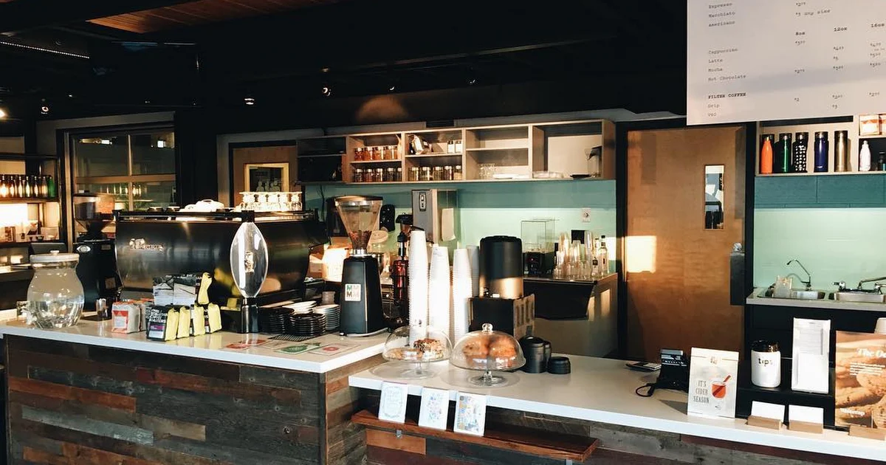
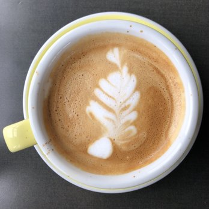
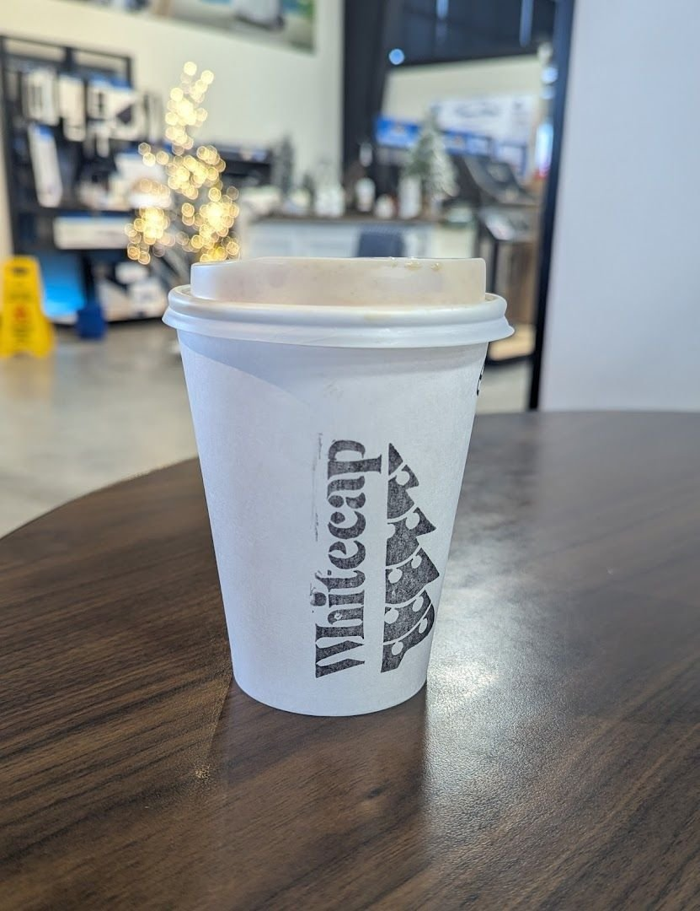

Whitecap Coffee
Winkler's independent coffee shop — where a careful pour-over meets a warm cinnamon bun, baked fresh in-house.
Photos: customer photos of Whitecap Coffee, shown for concept illustration.
What Reviewers Love
Not an official menu — just the treats and drinks customers keep raving about online.
Warm Cinnamon Buns
The one people write about most — fresh, warm, and worth the trip on its own.
♥ Reviewer favorite
Pour-Over Coffee
Brewed one cup at a time — the slow, deliberate way coffee was meant to be made.
♥ Reviewer favorite
Cheese Biscuits
Warmed up and perfect alongside an iced tea, if the regulars are to be believed.
♥ Reviewer favorite
Mountain Berry Iced Tea
A refreshing house-style iced brew tea that reviewers call out by name.
♥ Reviewer favorite

A real neighborhood coffee shop
Whitecap Coffee is an independent café on S Railway Ave in Winkler — no chain, no franchise. Freshly brewed coffee, warm treats from the bakeshop, and a counter that locals clearly love.
Customers praise the ethically sourced beans, the friendly staff, and the simple pleasure of good coffee with good company.
Want the full menu? Baked orders go through whitecapbakeshop@gmail.com.
Hours & Visit
Open bright and early every weekday — come grab your morning cup.
Opening Hours
| Monday | 7:00 AM – 9:00 PM |
| Tuesday | 7:00 AM – 9:00 PM |
| Wednesday | 7:00 AM – 9:00 PM |
| Thursday | 7:00 AM – 9:00 PM |
| Friday | 7:00 AM – 9:00 PM |
| Saturday | 8:00 AM – 5:00 PM |
| Sunday | Call for Sunday hours |
Find Us
Whitecap Coffee
555 S Railway Ave
Winkler, MB R6W 1J9
Call ahead for baked orders or just to check Sunday hours:
(204) 384-6844
Loved by Winkler
Real ratings from real customers.
Get in Touch
Call, email, or swing by — Winkler's coffee is waiting.
Phone
(204) 384-6844
Call for orders & Sunday hours
Email — Baked Orders
whitecapbakeshop@gmail.com
Bakeshop & catering orders
Grab a cup with the Whitecap logo
A warm welcome, fresh baking, and coffee done right — that's the Whitecap way. See you at 555 S Railway Ave.
